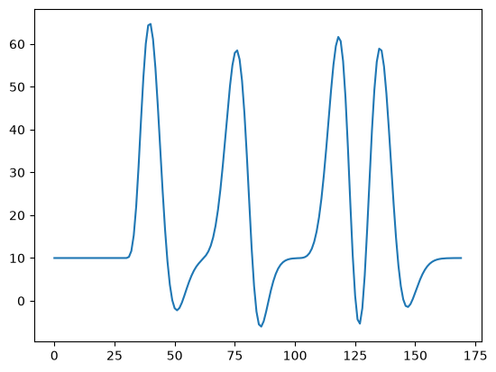
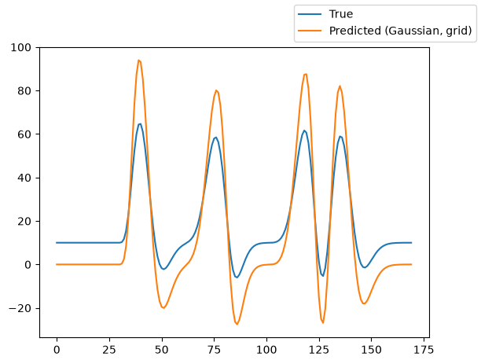
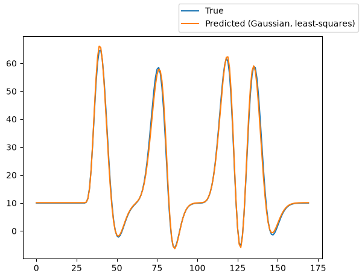
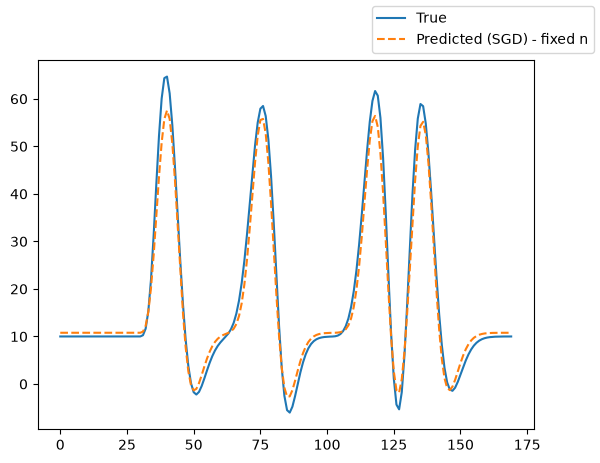
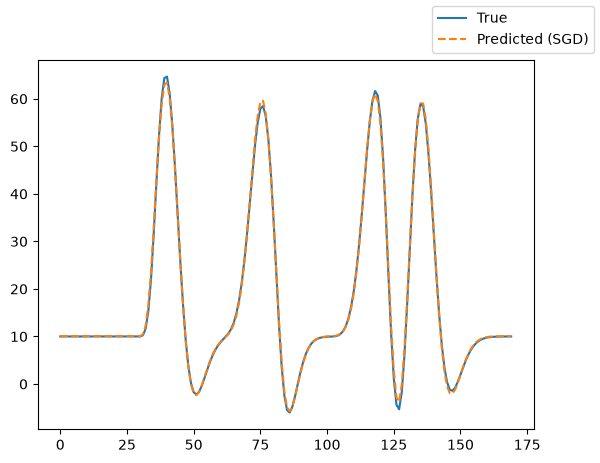

How to fit a compressive spatial summation population receptive field model to simulated data¶
Author: Malte Lüken (m.luken@esciencecenter.nl)
Difficulty: Beginner
This tutorial explains how to fit a compressive spatial summation (CSS) population receptive field (pRF) model to simulated data.
A pRF model maps neural activity in a region of interest in the brain (e.g., V1 in the human visual cortex) to an experimental stimulus (e.g., a bar moving through the visual field). The CSS model extends the classic Gaussian pRF by compressing the stimulus-encoded pRF response. This introduces a potential static non-linearity to the spatial encoding that is often observed in early visual areas (e.g., V1 and V2).
Because prfmodel uses Keras for model fitting, we need to make sure that a backend is installed before we begin. In this tutorial, we use the TensorFlow backend.
import os
from importlib.util import find_spec
# Set keras backend to 'tensorflow' (this is normally the default)
os.environ["KERAS_BACKEND"] = "tensorflow"
# Hide tensorflow info messages
os.environ["TF_CPP_MIN_LOG_LEVEL"] = "1"
if find_spec("tensorflow") is None:
msg = "Could not find the tensorflow package. Please install tensorflow with 'pip install .[tensorflow]'"
raise ImportError(msg)
Defining the stimulus¶
Let’s start with the first step: Defining the stimulus. In practice, we recommend that users save the stimulus they use in an experiment to a file and load it to avoid mismatches between experiment and analysis. Because we use simulated data in this tutorial, we load an example stimulus that is included in the package. The stimulus simulates a bar moving in different directions through a two-dimensional visual field.
from prfmodel.examples import load_2d_prf_bar_stimulus
stimulus = load_2d_prf_bar_stimulus()
print(stimulus)
PRFStimulus(design=array[170, 128, 128], grid=array[128, 128, 2], dimension_labels=['y', 'x'])
WARNING: All log messages before absl::InitializeLog() is called are written to STDERR
I0000 00:00:1787730674.727169 4467 cudart_stub.cc:31] Could not find cuda drivers on your machine, GPU will not be used.
WARNING: All log messages before absl::InitializeLog() is called are written to STDERR
I0000 00:00:1787730675.983789 4467 cudart_stub.cc:31] Could not find cuda drivers on your machine, GPU will not be used.
When printing the stimulus object, we can see that it has three attributes. The design attribute defines how
the visual field changes over time. It has shape (num_frames, height, width), where height and width define the number of pixels at which the visual field is recorded. The grid attribute maps each pixel to its coordinate in the visual field (i.e., the degree of visual angle). Its last axis follows the axes of the design, so grid[..., 0] holds the vertical (y) coordinate and grid[..., 1] the horizontal (x) coordinate.
We can visualize the stimulus using animate_2d_stimulus.
from IPython.display import HTML
from prfmodel.plotting import animate_2d_prf_stimulus
ani = animate_2d_prf_stimulus(stimulus, interval=25) # Pause 25 ms between time frames
HTML(ani.to_html5_video())
Defining the CSS pRF model¶
Now that we defined our stimulus, we can create a CSS pRF model to predict a neural response to this stimulus.
We first define a custom encoding model using the CompressiveEncoder class that modifies the behavior of the standard
PRFStimulusEncoder. Then, we insert the encoding model into a Gaussian 2D pRF model. The CompressiveEncoder compresses
the stimulus-encoded pRF response as follows (see Kay et al., 2013):
where \(S(t,x,y)\) is the stimulus design and \(G(x,y)\) is the pRF response. The CSS model has two additionial parameters,
gain (encoded response amplitude) and n (compression exponent). When \(n < 1.0\), the encode response is compressed.
from prfmodel.models.compression import CompressiveEncoder
from prfmodel.models.prf import Gaussian2DPRFModel, PRFStimulusEncoder
compressive_encoder = CompressiveEncoder(
encoding_model=PRFStimulusEncoder(),
)
prf_model = Gaussian2DPRFModel(
encoding_model=compressive_encoder,
)
To simulate a neural response to our stimulus with our CSS pRF model, we need to define a set of parameters.
The list of parameters that need to be set to make model predictions can be obtained from the parameter_names property.
prf_model.parameter_names
['mu_y', 'mu_x', 'sigma', 'gain', 'n', 'weight_deriv', 'baseline', 'amplitude']
The parameters mu_x and mu_y define the center of the pRF while gain and n determine the compression of the stimulus encoding. The parameters delay, dispersion, undershoot, u_dispersion, ratio, and weight_deriv determine the impulse response that is convolved with our pRF response; the two-gamma parameters (delay, dispersion, undershoot, u_dispersion, ratio) default to the Glover HRF parameter set (see default_two_gamma_impulse_glover_hrf()), so we only set weight_deriv here. The parameters baseline and amplitude shift and scale our convolved response, respectively. We store the parameter values in a pandas.DataFrame object.
import pandas as pd
true_params = pd.DataFrame(
{
"mu_x": [-2.1],
"mu_y": [1.45],
"sigma": [1.35],
# delay, dispersion, undershoot, u_dispersion, and ratio use the default Glover HRF parameters
"weight_deriv": [-0.5],
"baseline": [10.0],
"amplitude": [1.1],
"gain": [1.0],
"n": [0.8],
},
)
Using the “true” parameters, we simulate a response to our stimulus by making a prediction with our pRF model.
import matplotlib.pyplot as plt
simulated_response = prf_model(stimulus, true_params)
_ = plt.plot(simulated_response[0])
E0000 00:00:1787730683.594331 4467 cuda_platform.cc:52] failed call to cuInit: INTERNAL: CUDA error: Failed call to cuInit: UNKNOWN ERROR (303)

The predicted response contains increased activation followed by decreased activation compared to the baseline activity for each moving bar in our stimulus.
Fitting the pRF model¶
We will fit the CSS pRF model using a two-step approach.
In Step 1, we fit a normal Gaussian 2D pRF model to find good starting values for the pRF center (
mu_x,mu_y) and size (sigma) using a grid search. We use least-squares to find a good starting point for theamplitude.In Step 2, we use the estimated parameters from step 1 to initialize the parameters of our CSS pRF model. We use stochastic gradient descent (SGD) to finetune the CSS parameter estimates.
Step 1: Fit a Gaussian 2D pRF model¶
Let’s start with a grid search over mu_x, mu_y, and sigma using a normal
Gaussian2DPRFModel.
from prfmodel.models.prf import Gaussian2DPRFModel
import numpy as np
gaussian_model = Gaussian2DPRFModel()
param_ranges_gaussian = {
"mu_x": np.linspace(-3.0, 3.0, 10),
"mu_y": np.linspace(-3.0, 3.0, 10),
"sigma": np.linspace(0.5, 3.0, 10),
# delay, dispersion, undershoot, u_dispersion, and ratio use the default Glover HRF parameters
"weight_deriv": [-0.5],
"baseline": [0.0],
"amplitude": [1.0],
}
For all three parameters, we defined ranges of 10 values, giving \(10 \times 10 \times 10 = 1000\)
parameter combinations to evaluate. Let’s construct the GridFitter and run the grid search.
from prfmodel.fitters import GridFitter
grid_fitter = GridFitter(model=gaussian_model, stimulus=stimulus)
grid_history, grid_params = grid_fitter.fit(
data=simulated_response,
parameter_values=param_ranges_gaussian,
batch_size=20,
)
grid_params
| mu_x | mu_y | sigma | weight_deriv | baseline | amplitude | |
|---|---|---|---|---|---|---|
| 0 | -2.333333 | 1.666667 | 1.611111 | -0.5 | 0.0 | 1.0 |
We can see that the estimates for mu_x, mu_y, and sigma are one combination in our grid. However, because the
grid did not contain the “true” parameters we used to simulate the original response, the estimates differ from the
“true” parameters.
Using the parameter estimates resulting from the grid search we can make model predictions and compare them against the original simulated response.
gaussian_pred_response = gaussian_model(stimulus, grid_params)
fig, ax = plt.subplots()
ax.plot(simulated_response[0], label="True")
ax.plot(gaussian_pred_response[0], label="Predicted (Gaussian, grid)")
fig.legend();

We can see that the predicted response follows the shape of the original (true) response but still shows some deviation in the amplitude of the activation peaks and the baseline activation.
Using least squares, we can estimate the baseline and amplitude parameters of our model.
from prfmodel.fitters import LeastSquaresFitter
ls_fitter = LeastSquaresFitter(model=gaussian_model, stimulus=stimulus)
ls_history, gaussian_params = ls_fitter.fit(
data=simulated_response,
parameters=grid_params,
slope_name="amplitude",
intercept_name="baseline",
)
gaussian_params
| mu_x | mu_y | sigma | weight_deriv | baseline | amplitude | |
|---|---|---|---|---|---|---|
| 0 | -2.333333 | 1.666667 | 1.611111 | -0.5 | 10.111982 | 0.596102 |
The Gaussian least-squares fit adjusts the scale and baseline to match the simulated response.
gaussian_pred_response = gaussian_model(stimulus, gaussian_params)
fig, ax = plt.subplots()
ax.plot(simulated_response[0], label="True")
ax.plot(gaussian_pred_response[0], label="Predicted (Gaussian, least-squares)")
fig.legend();

Step 2: Fit the CSS pRF model¶
We now initialize a CSS pRF model from the parameters estimated in the previous step. Because the CSS model additionally
requires parameters gain and n, we use the init_css_from_gaussian helper function to add starting values for
these parameters.
We then run SGD directly on the CSS model. We add an adapter that log-transforms sigma and n during parameter
optimization, forcing them to stay positive.
In the first SGD run, we restrict n to be fixed to its starting value.
from keras import ops
from prfmodel.models.prf import init_css_from_gaussian
from prfmodel.fitters import SGDFitter
from prfmodel.fitters.adapter import Adapter, ParameterTransform
css_adapter = Adapter([
ParameterTransform(["sigma", "n"], ops.log, ops.exp)
])
sgd_fitter = SGDFitter(
model=prf_model,
stimulus=stimulus,
adapter=css_adapter,
)
# Add starting values for CSS parameters
init_params = init_css_from_gaussian(gaussian_params)
# n is a fixed parameter
fixed_params = ["weight_deriv", "n"]
_, sgd_params_fixed_n = sgd_fitter.fit(
data=simulated_response,
init_parameters=init_params,
fixed_parameters=fixed_params,
)
sgd_params_fixed_n
| mu_x | mu_y | sigma | weight_deriv | baseline | amplitude | gain | n | |
|---|---|---|---|---|---|---|---|---|
| 0 | -1.963405 | 1.196348 | 0.80952 | -0.5 | 10.777725 | 1.464621 | 1.915076 | 0.5 |
We can plot the predicted model response and see that it closely aligns with the original simulated response.
sgd_pred_response_fixed_n = prf_model(stimulus, sgd_params_fixed_n)
fig, ax = plt.subplots()
ax.plot(simulated_response[0], label="True")
ax.plot(sgd_pred_response_fixed_n[0], "--", label="Predicted (SGD) - fixed n")
fig.legend();

We can improve the model fit even further by adding n to the free parameters. We again run SGD but remove n from
fixed_parameters.
sgd_fitter = SGDFitter(
model=prf_model,
stimulus=stimulus,
adapter=css_adapter,
)
fixed_params.remove("n") # Add 'n' to free parameters
_, sgd_params = sgd_fitter.fit(
data=simulated_response,
init_parameters=sgd_params_fixed_n,
fixed_parameters=fixed_params,
)
sgd_params
| mu_x | mu_y | sigma | weight_deriv | baseline | amplitude | gain | n | |
|---|---|---|---|---|---|---|---|---|
| 0 | -2.031079 | 1.335256 | 1.020774 | -0.5 | 10.076426 | 1.512763 | 1.963289 | 0.534453 |
We can see that the estimate for n is close to the true parameter and correctly indicates compression. Again, we
plot the predicted model response against the true simulated response.
sgd_pred_response = prf_model(stimulus, sgd_params)
fig, ax = plt.subplots()
ax.plot(simulated_response[0], label="True")
ax.plot(sgd_pred_response[0], "--", label="Predicted (SGD)")
fig.legend();

The predicted model response aligns perfectly with the true simulated response.
Conclusion¶
In this tutorial, we showed how to fit a Gaussian 2D compressive spatial summation (CSS) pRF model to simulated data using a two-step workflow.
In Step 1, we fitted a normal Gaussian 2D pRF model with a grid search and least squares to efficiently locate the pRF center and size.
In Step 2, we seeded the CSS pRF model parameters with the estimates from the normal Gaussian 2D pRF model.
We then ran SGD with a ParameterTransform that enforced the pRF size sigma and the compression coefficient n to be positive during optimisation.
At each stage, we compared the predicted model response against the original simulated response to check the quality of the fit.
References¶
Kay, K. N., Winawer, J., Mezer, A., & Wandell, B. A. (2013). Compressive spatial summation in human visual cortex. Journal of Neurophysiology, 110(2), 481–494. https://doi.org/10.1152/jn.00105.2013